Cycling in Copenhagen - with a critical note
Copenhagen, the most bicycle friendly city in the world! Is it though? I was not really impressed by what I saw. It wasn't bad for sure, but I think some critical notes are justified.
I will count the Capital Region of Denmark as 'Copenhagen', as most of the area is closely connected to Copenhagen, and anyone spending a significant amount of time in the city, will probably also travel in the surrounding muncipalities.
I'll just list my observations, starting with the positives, and afterwards some pictures to show what I mean.
Positives
- Cycling routes are quite fast, especially in the city centre, you barely have to wait for traffic lights as long as you’re going straight ahead at intersections.
- Dedicated cycle infrastructure everywhere: cycle lanes, dedicated traffic lights.
- Wide, one direction cycle paths make overtaking safe.
- Enough bike stands and parking spots for bikes, and people don’t fix their bikes on any solid object that might be in the middle of the sidewalk.
- Car drivers are considerate of cyclists. I have rarely experienced a driver forgetting to give me right of way, or passing too close by.
- No scooters. No idea why they’re not popular in Copenhagen, but I’m certainly not missing these noisy, stinking and speeding two-wheeled devils.
- Bike paths are kept snow free with care. Overnight snow and have to leave at 7am? No worries, everything will be perfectly safe to cycle.
- Bike theft is pretty rare
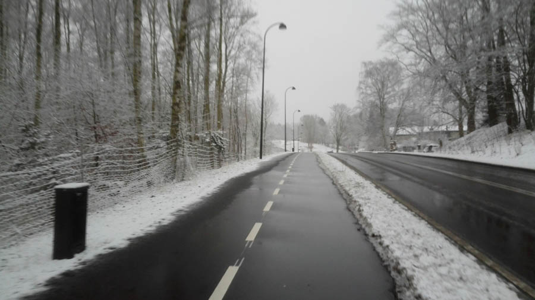
The bike path is cleaner than the road.
Negatives
- The fastest and quickest cycling routes are terrible environments to cycle in. There are few good cycle routes that are not next to a large through road. Many cycle paths are even right next to a highway. In the ‘most bicycle-friendly city in the world’ cars often pass you from behind at 80 km/h, while you’re cycling on something that’s barely indistinguishable from a hard shoulder.
- Hills. Cannot blame them for it really, but there are some noticeable hills. After a few transit trips I've managed to pick an 'ideal route' that avoids the steepest and longest slopes.
- Double stopping when turning left. There’s no left-turning lane for cyclists, so you have to wait to cross first, and then wait on the other side cross the road on your left hand side. Oh, and the waiting area is exactly where people who go straight ahead want to go. (picture of typical Danish intersection)
- Lack of bike racks and bike stands with fixing points. Denmark has a great bike registration system, but still, 25,500 bikes were reported stolen in Denmark in 2015. Most of them probably in Copenhagen. Good usage of a chain or a U-lock is a minimum to prevent bike theft, but I doubt they'll appreciate it if you chain your bike to a lamp post on the middle of the sidewalk.
- Few direction signs for cyclists. You may encounter direction signs, but even those are not very useful, often only directing to neighbourhoods instead of landmarks or long distance destinations. If you are cycling further than the next neighbourhood, you're basically left with your phone and GPS. Let's say you're cycling from Kongens Lyngby to Copenhagen city centre. Then you'll see signs saying 'Jægersborg', 'Gentofte', 'Dyssegård'. Might as well remember the landmarks from Google Streetview then...
Pictures
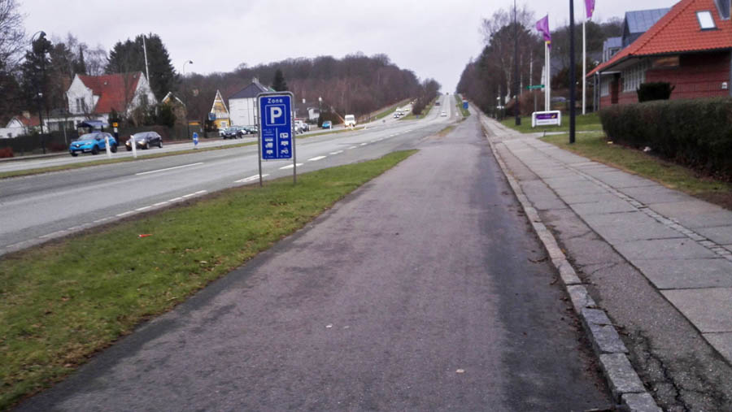
Cycling a 200 meter long hill next to a 4 lane road. Lovely.
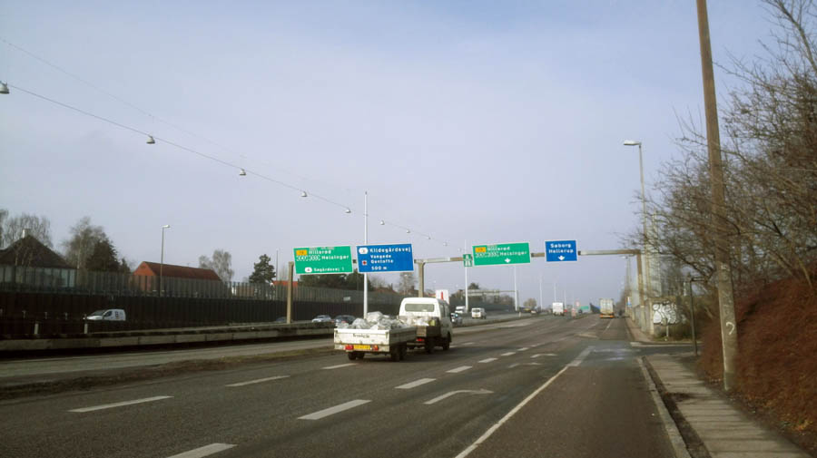
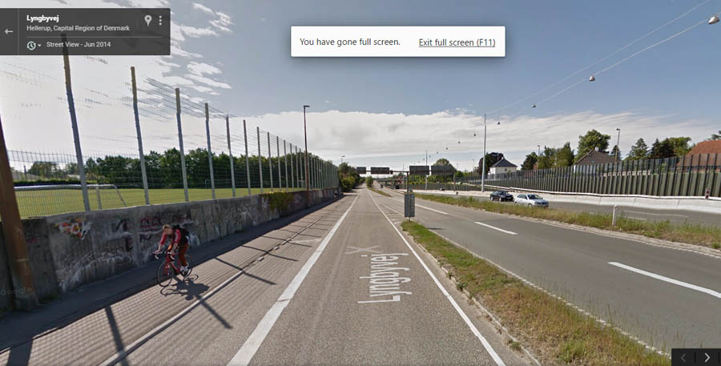
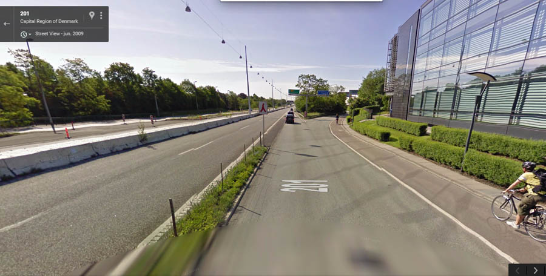
The main bike route from Copenhagen to Lyngby.
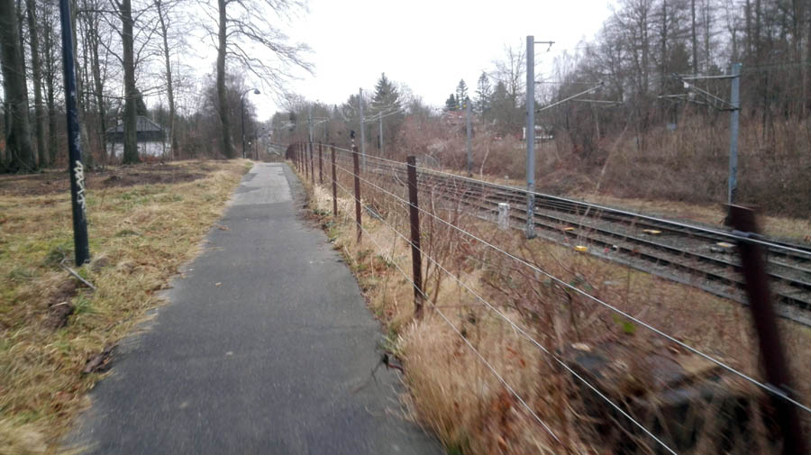
Small bike path next to a nice wooded area and the S-tog track.
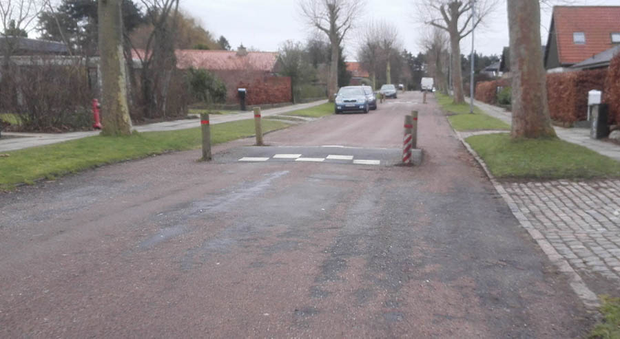
The speed bumps are bicycle friendly.
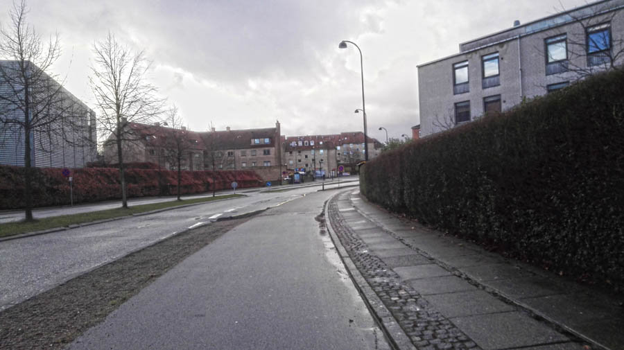
Just a random bike path in Vangede.
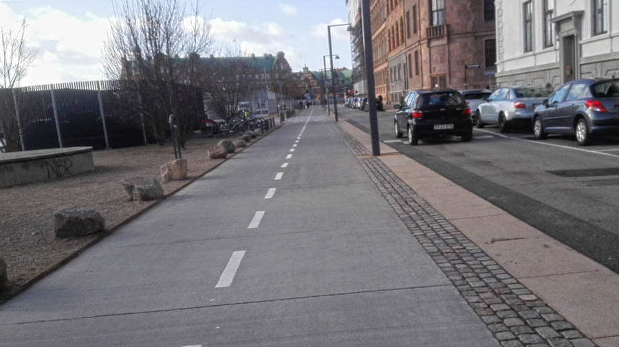
Great bike path at Havnegade (right next to Nyhavn).
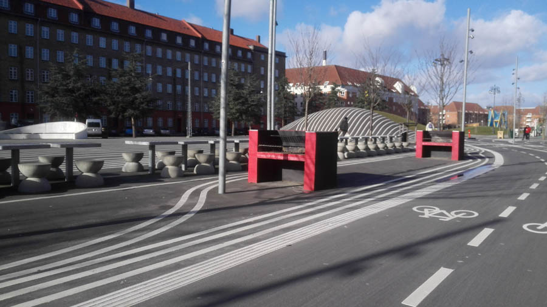
Nørrebroruten. A new park and cycling route. They're taking this seriously.
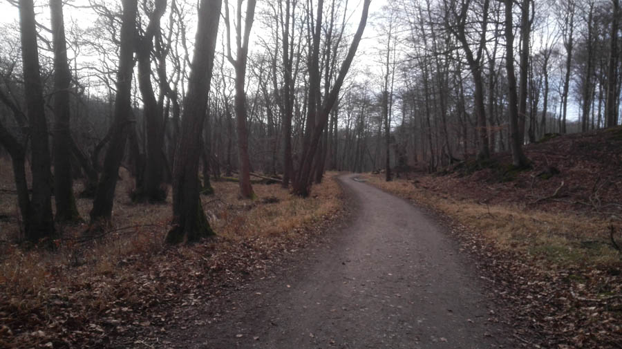
Dyrehaven forest path.
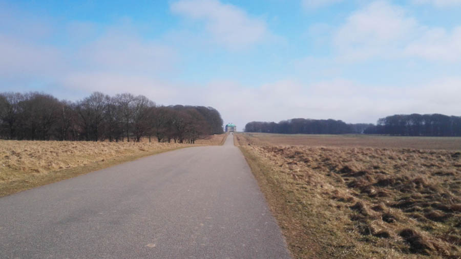
Dyrehaven. That's Eremitageslottet in the background.
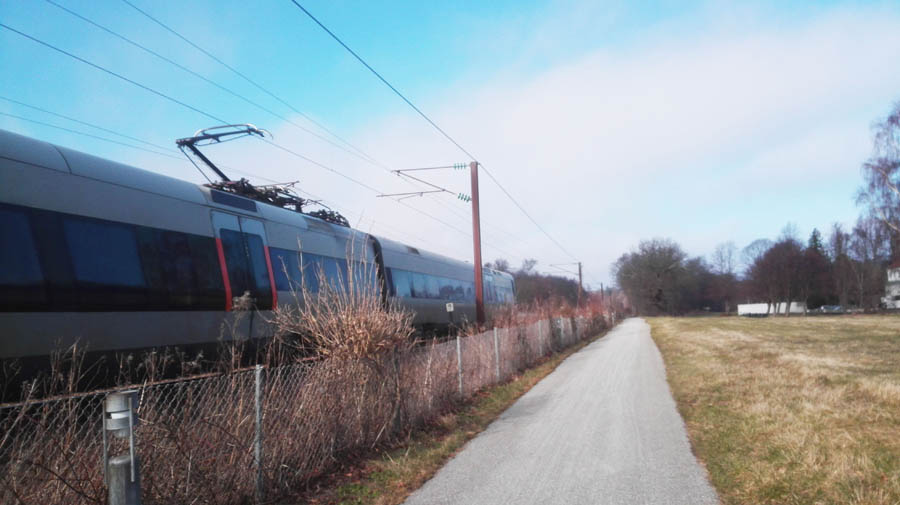
The nice thing about bike paths next to the railway is that they're relatively flat.
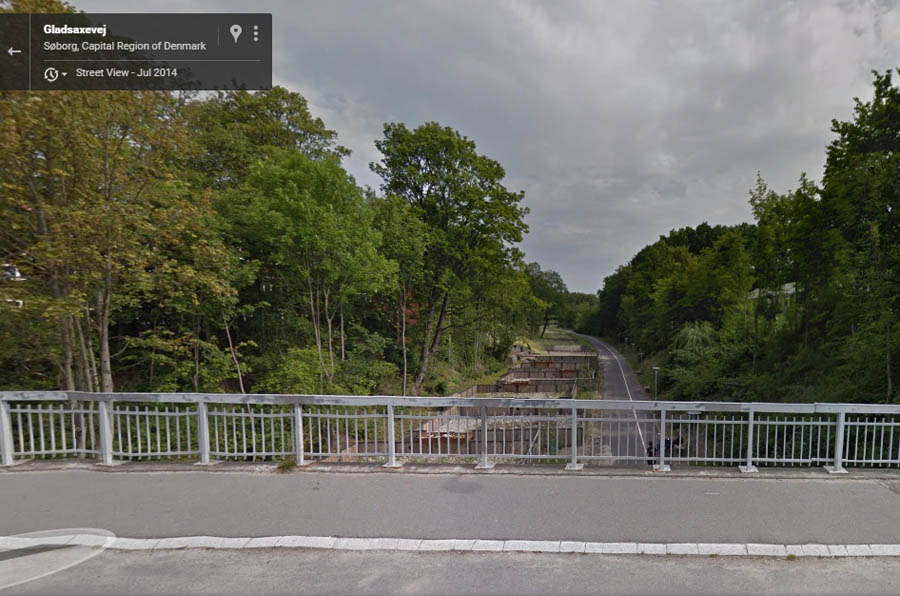
Bike path at the route of a planned through road. Flat, no level crossings, spacious and quiet. Gladsaxe.
More posts about Denmark
{kind=link}